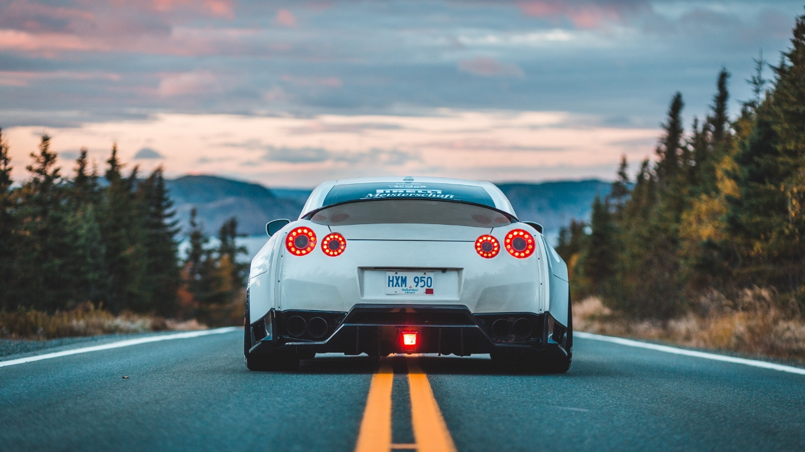
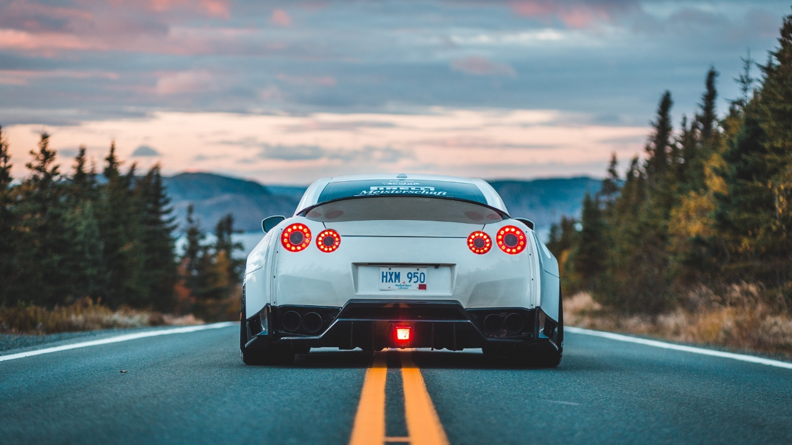

Información
1Origen El Nacimiento del Mito
La historia de los autos deportivos comenzó cuando dejaron de ser simples medios de transporte… y se transformaron en máquinas de emociones. A finales del siglo XIX, el Mercedes Simplex marcó el inicio de una nueva era. Después llegaron gigantes como Bugatti, Alfa Romeo y Ferrari, que no solo dominaron las calles, sino también las pistas de carrera. Los autos deportivos no solo ofrecían velocidad: representaban pasión, riesgo y gloria. Pilotos legendarios como Juan Manuel Fangio y Ayrton Senna convirtieron estos vehículos en íconos de competencia y elegancia. Desde entonces, cada aceleración y cada curva cerrada nos recuerda que estos autos no son solo ingeniería: son historia, arte y adrenalina sobre ruedas.
2Diseño y Tecnología La Belleza de lo
Funcional
Desde las curvas elegantes de los años 50 hasta los ángulos afilados y materiales ultraligeros de hoy, los
autos deportivos han sido vitrinas móviles de innovación. Cada detalle está pensado para deslizar el aire,
abrazar el asfalto y emocionar al conductor.
Tecnologías como la inyección electrónica, el control de tracción y los sistemas de suspensión
inteligentes han transformado estas bestias en máquinas inteligentes. Ya no basta con ir rápido, ahora se
busca ir rápido con estilo, precisión y seguridad.

3Cultura Pop De Íconos de Metal a Leyendas
de la Pantalla
Imagina un rugido que atraviesa décadas. Un collage de leyendas: desde los Mercedes Simplex de principios del siglo XX hasta los superdeportivos eléctricos del mañana. Todos juntos, alineados sobre una pista infinita que conecta historia, tecnología, velocidad y pasión. Los autos deportivos no nacieron simplemente para ir rápido. Nacieron para emocionar, para inspirar, para desafiar los límites de lo posible. Son obras maestras del diseño y la ingeniería, pero también reflejos de una cultura que siempre ha buscado ir un poco más allá. Este artículo es un viaje a través del tiempo: exploraremos la evolución de estos íconos, su impacto en el automovilismo, su papel en la cultura pop y cómo están conquistando también el futuro eléctrico.
4Competencia Donde Todo Comenzó… y Nunca
Terminó
Los autos deportivos no se forjan solo en fábricas, sino en circuitos de fuego y velocidad. Desde la Fórmula 1 hasta Le Mans, la evolución del automovilismo ha sido el laboratorio donde nacen las tecnologías que luego llegan a nuestras calles. La suspensión activa, los frenos regenerativos o la aerodinámica activa no serían posibles sin la presión de una carrera. Lo que hoy manejas en la ciudad, ayer fue probado al límite por un piloto jugándose la vida a 300 km/h.
5El Futuro es Eléctrico (y Aún Más
Rápido)
Tesla, Porsche, Rimac… La revolución eléctrica ha llegado al mundo de los autos deportivos, y no tiene nada de silenciosa. Hoy, un auto eléctrico puede acelerar de 0 a 100 en menos de 2 segundos, dejando atrás a muchos superdeportivos tradicionales. Y lo hace sin una gota de gasolina. Pero no todo es potencia. El enfoque actual también apunta a la sostenibilidad, la eficiencia y la inteligencia automotriz. El futuro de los deportivos se conecta a 5G, aprende con inteligencia artificial y se adapta a cada conductor.
Algunos de los Deportivos más íconicos
Ferrari 250 GTO: Considerado uno de los automóviles más valiosos y deseados del mundo, el Ferrari 250 GTO se produjo entre 1962 y 1964. Con su distintivo diseño y su impresionante desempeño en las carreras, este modelo se ha convertido en un ícono del automovilismo.
Chevrolet Corvette: El Corvette es un símbolo de los automóviles deportivos estadounidenses. Introducido en 1953, ha pasado por varias generaciones y ha cautivado a los entusiastas con su estilo audaz y su potencia impresionante. El Corvette es conocido por su relación calidad-precio y su desempeño de alto nivel.
Ford Mustang: El Mustang es uno de los autos deportivos más emblemáticos de Estados Unidos y se ha convertido en un ícono de la cultura automotriz. Lanzado en 1964, el Mustang popularizó el concepto de los "pony cars" y ha sido un éxito continuo en términos de ventas y presencia en el mercado.
Nissan Skyline GT-R: Conocido como el "Godzilla" en el mundo de los automóviles deportivos, el Skyline GT-R de Nissan se ha ganado un lugar en la cultura popular y en los corazones de los entusiastas del automovilismo. Su combinación de tecnología avanzada y desempeño impresionante lo convierte en un ícono para los fanáticos de los autos japoneses.
Porsche 911: Introducido en 1963, el Porsche 911 se ha mantenido como uno de los autos deportivos más reconocidos y exitosos de todos los tiempos. Con su diseño distintivo de carrocería trasera y motor bóxer, el 911 ha evolucionado a lo largo de los años, pero siempre ha conservado su identidad y espíritu deportivo.
Lamborghini Miura: El Miura, lanzado en 1966, fue un hito para Lamborghini y estableció el estándar para los superdeportivos modernos. Con su diseño revolucionario de motor central y líneas elegantes, el Miura se convirtió en un referente en cuanto a estilo y desempeño.
Jaguar E-Type: Introducido en 1961, el Jaguar E-Type capturó la atención del mundo con su diseño elegante y su rendimiento excepcional. Considerado por muchos como uno de los autos más hermosos jamás fabricados, el E-Type dejó una huella duradera en la industria automotriz.
Toyota Supra: El Supra MKIV, como se le conoce comúnmente, es reconocido por su diseño aerodinámico, líneas suaves y su distintivo alerón trasero. Sin embargo, lo que realmente impulsó su reputación fue su motor de seis cilindros en línea, conocido como el 2JZ-GTE. Este motor turboalimentado era increíblemente robusto y capaz de producir una gran potencia. Muchos entusiastas lo modificaban para obtener aún más rendimiento, lo que llevó al Supra a niveles asombrosos de potencia y velocidad.
Galería
 
